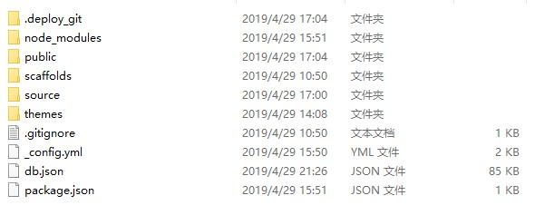
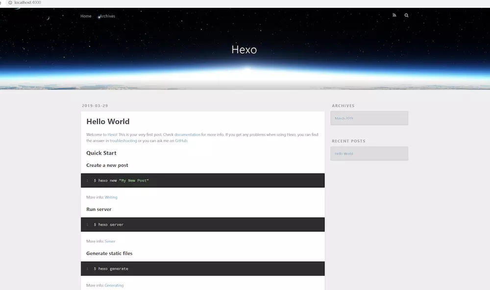
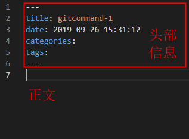

Hexo 是一个轻量级、简洁、高效且高逼格的博客框架。Hexo 使用 Markdown（或其他渲染引擎）解析文章，在几秒内，即可利用靓丽的主题生成静态网页。同时有着丰富的主题，官网或者GitHub都可以轻松下载到。由于Hexo博客都是静态文件，所以推荐部署在Github上，不需要额外的服务器和后台，做到零成本。
话不多说，下面就开始介绍如何使用Hexo搭建个人博客。
hexo依赖于Node.js和Git，因此需要先安装这两项：
1.Node.js下载地址
2.Git下载地址
安装完Node.js后，可使用npm命令，由于npm命令本身是很慢的（源在国外），建议使用淘宝的cnpm来替代npm命令，打开命令行执行如下命令安装cnpm：
npm install -g cnpm --registry=https://registry.npm.taobao.org-g表示全局安装，下面就可以开始安装Hexo了。
命令行执行如下命令：
cnpm install -g hexo在任意地方创建文件夹hexo，如D:\blog\hexo，这个文件夹就是用来存放博客代码和文章的地方，后面我们称之为根目录。
这边建议在GitBash操作，又键该目录，选择Git Bash Here，打开后执行如下命令：
hexo init初始化后会在目录生成如下文件

大家会看到，目录中有个名为_config.yml的文件，这个是全局配置文件，主要配置站点信息。
这时我们的hexo博客已安装完成，执行如下命令
hexo g
hexo s然后打开浏览器输入：http://localhost:4000，即可看到博客主页。

执行下列命令来创建一篇新文章
hexo new [layout] <title>layout可选，默认post，可以通过修改 _config.yml 中的 default_layout 参数来指定默认布局
Hexo 有三种默认布局：post、page 和 draft。在创建者三种不同类型的文件时，它们将会被保存到不同的路径；而自定义的其他布局和 post 相同，都将储存到 source/_posts 文件夹。
| 布局 | 路径 |
|---|---|
| post | source/_posts |
| page | source |
| draft | source/_drafts |
执行命令后会在对应目录下生成一个markdown文件

在此，Hexo博客初始版本已经搭建完成，下一章节，将教大家如何安装主题，配置一些常用的功能。
hexo init：初始化Hexo
hexo g：重新生成public文件夹，这个里面是生成的所有静态文件，包括html，css，js文件以及图片等
hexo s：启动hexo服务的
可连着使用hexo s hexo g
hexo new [layout] <title>：创建文章